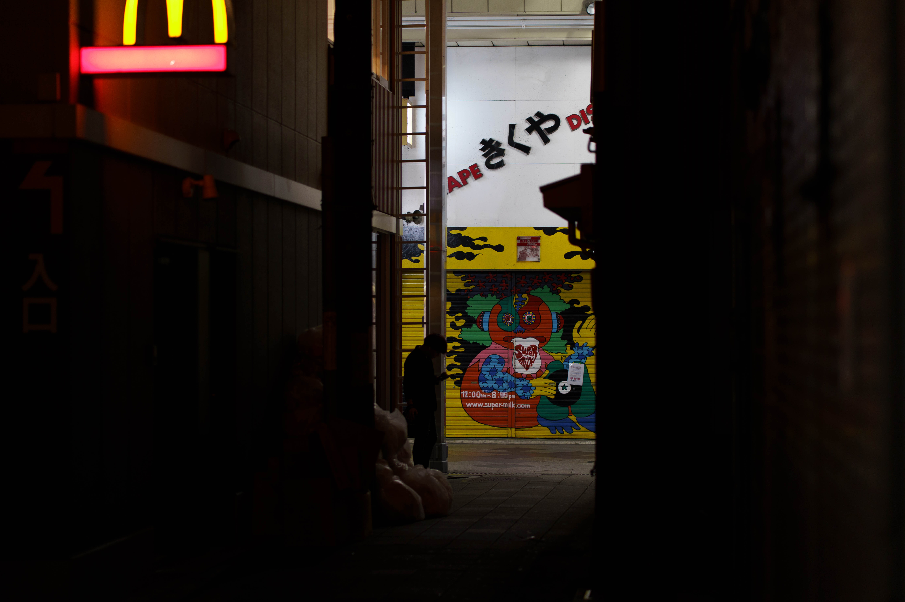
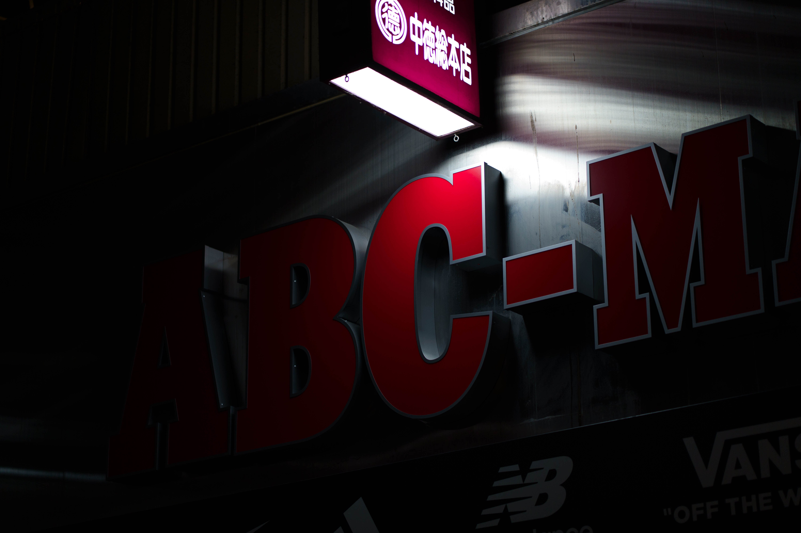
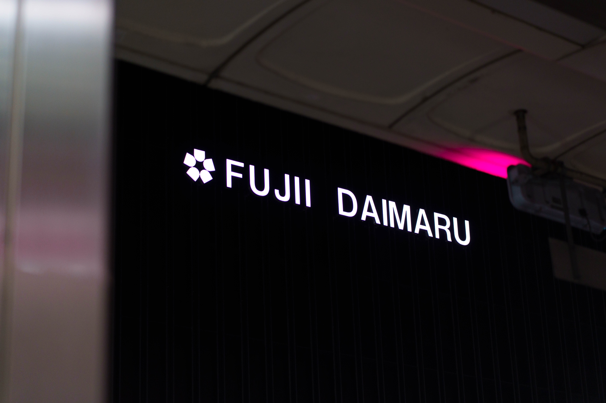
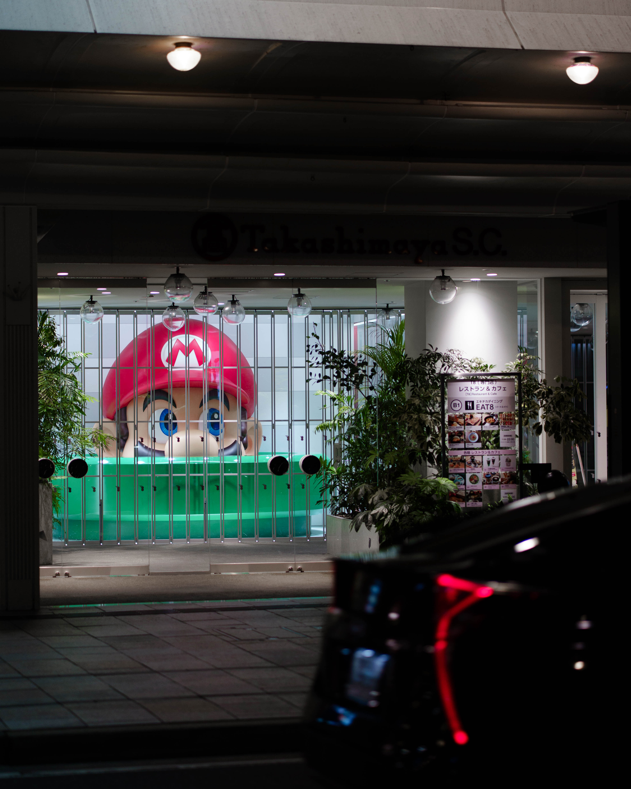

GWの思い出とか無い、ので記録する。

2026/05/06
まさかずっと京都に引きこもってたってことはないっすよね、、、だって８日間もGWあるのに、、、？
まぁ毎年のことなんでね、、、今更感しかないんですけど。
ということでやったことと撮ったものを載せます。
今年のGWやったこと
・直近の撮影用のレンズ調達（計20万涙）
・藤大閉店見送り（とか言いつつ服買っただけ）
・クリーニング往復
・一瞬鳥取
・睡眠（そんなこと書くな）
・プラダ着たデビルⅡ最前列鑑賞
以上！！！
何もしてないように見えて実は充実してたんちゃうの？となるのが京都の良いとこかもねとか思います定期。
いつも通り最後は写真で終わります。
（85mmってマジでポートレンズだなぁって思ったのといい感じに撮れるが面白わけちゃうなぁとか思ったり何だったり。）



